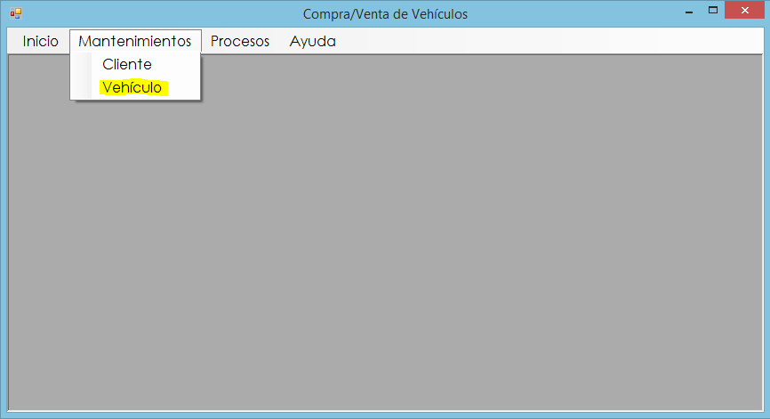

Proceso vehículo
El proceso de vehículos tiene como objetivo registrar un nuevo vehículo al sistema. Para ello debemos dirigirnos al menú de Mantenimientos y luego seleccionamos la opción Vehículo.
Formulario
En la siguiente Figura podremos observar el Formulario que debemos llenar.